#001 · Navigation
Media page
Round button 1
Both editions · 00:00:34–00:01:05168 individual assets extracted from the supplied walkthrough. Each asset is the actual CT button, dial, wheel, or physical-key crop seen in the reference video—no generic substitute glyphs.
Verification rule: the name, control placement, edition, and timestamp are kept beside each exact source crop. This makes every action easy to compare against the catalog before it is packaged in the final CT profile.
#001 · Navigation
Round button 1
Both editions · 00:00:34–00:01:05
#002 · Navigation
Round button 2
Both editions · 00:00:34–00:01:05#003 · Navigation
Round button 3
Both editions · 00:00:34–00:01:05
#004 · Navigation
Round button 4
Both editions · 00:00:34–00:01:05
#005 · Navigation
Round button 5
Both editions · 00:00:34–00:01:05#006 · Navigation
Round button 6
Both editions · 00:00:34–00:01:05
#007 · Navigation
Round button 7
Both editions · 00:00:34–00:01:05#008 · Navigation
Round button 8
Both editions · 00:00:34–00:01:05#009 · Media / Project
Touch 1 · top-left
Both editions · 00:02:04–00:02:21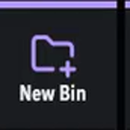
#010 · Media / Project
Touch 2 · top row
Both editions · 00:01:50–00:02:02
#011 · Media / Project
Touch 3 · top row
Both editions · 00:02:33–00:02:44
#012 · Media / Project
Touch 4 · top-right
Both editions · 00:02:44–00:02:51#013 · Media / Project
Touch 5 · middle-left
Both editions · 00:03:01–00:03:10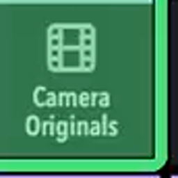
#014 · Media / Project
Touch 6 · middle row
Both editions · 00:03:10–00:03:15
#015 · Media / Project
Touch 7 · middle row
Both editions · 00:01:35–00:01:50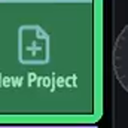
#016 · Media / Project
Touch 8 · middle-right
Both editions · 00:02:51–00:02:57
#017 · Media / Project
Touch 9 · bottom-left
Both editions · 00:02:21–00:02:33
#018 · Media / Project
Touch 10 · bottom row
Studio only · 00:03:15–00:03:29; 00:21:03–00:21:14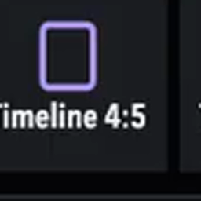
#019 · Media / Project
Touch 11 · bottom row
Studio only · 00:03:15–00:03:29; 00:21:14–00:21:19
#020 · Media / Project
Touch 12 · bottom-right
Studio only · 00:03:15–00:03:29; 00:21:19–00:21:24
#021 · Media / Project
Alternate bottom row
Free edition · 00:03:31–00:03:36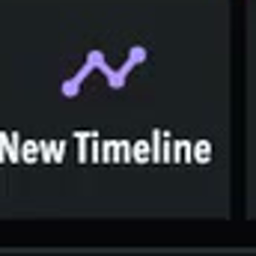
#022 · Media / Project
Alternate bottom row
Free edition · 00:03:31–00:03:36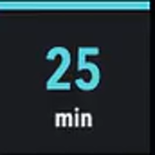
#023 · Media / Break Timer
Timer touch 1
Studio only · 00:03:45–00:03:56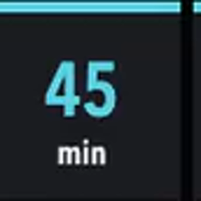
#024 · Media / Break Timer
Timer touch 2
Studio only · 00:03:36–00:04:06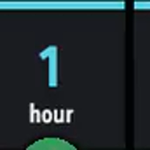
#025 · Media / Break Timer
Timer touch 3
Studio only · 00:03:36–00:04:06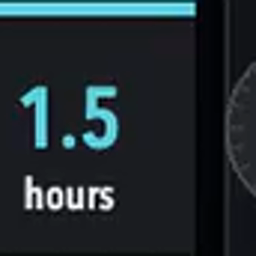
#026 · Media / Break Timer
Timer touch 4
Studio only · 00:03:36–00:04:06#027 · Media / Break Timer
Timer touch 5
Studio only · 00:03:36–00:04:06
#028 · Media / Break Timer
Timer touch 6
Studio only · 00:03:36–00:04:06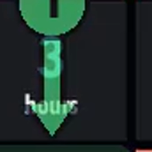
#029 · Media / Break Timer
Timer touch 7
Studio only · 00:03:36–00:04:06
#030 · Media / Break Timer
Timer touch 8
Studio only · 00:03:36–00:04:06
#031 · Media / Break Timer
Timer touch 9
Studio only · 00:04:01–00:04:06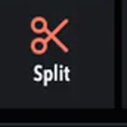
#032 · Media / Break Timer
Timer touch 10
Studio only · 00:15:08–00:15:29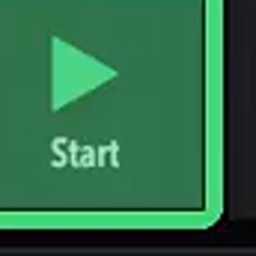
#033 · Media / Break Timer
Timer touch 11
Studio only · 00:03:45–00:03:56
#034 · Media / Break Timer
Timer touch 12
Studio only · 00:03:59–00:04:01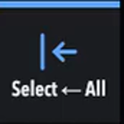
#035 · Edit 1
Touch 1 · top-left
Both editions · 00:07:06–00:07:20
#036 · Edit 1
Touch 2 · top row
Both editions · 00:07:06–00:07:16
#037 · Edit 1
Touch 3 · top row
Both editions · 00:07:20–00:07:42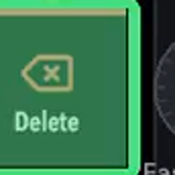
#038 · Edit 1
Touch 4 · top-right
Both editions · 00:06:41–00:06:51#039 · Edit 1
Touch 5 · middle-left
Both editions · 00:06:51–00:07:03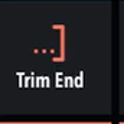
#040 · Edit 1
Touch 6 · middle row
Both editions · 00:06:51–00:07:03
#041 · Edit 1
Touch 7 · middle row
Both editions · 00:07:57–00:08:03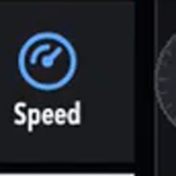
#042 · Edit 1
Touch 8 · middle-right
Both editions · 00:07:42–00:07:57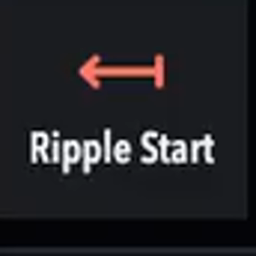
#043 · Edit 1
Touch 9 · bottom-left
Both editions · 00:06:07–00:06:21
#044 · Edit 1
Touch 10 · bottom row
Both editions · 00:06:32–00:06:41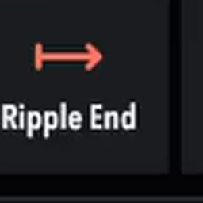
#045 · Edit 1
Touch 11 · bottom row
Both editions · 00:06:21–00:06:32
#046 · Edit 1
Touch 12 · bottom-right
Both editions · 00:05:31–00:05:40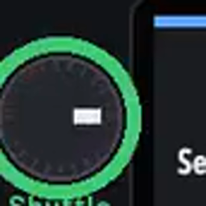
#047 · Edit 1
Top-left dial · turn
Both editions · 00:05:09–00:05:13
#048 · Edit 1
Top-left dial · press
Both editions · 00:08:03–00:08:13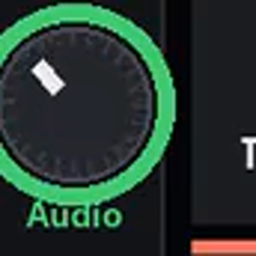
#049 · Edit 1
Middle-left dial · turn
Both editions · 00:08:19–00:08:28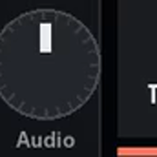
#050 · Edit 1
Middle-left dial · press
Both editions · 00:08:13–00:08:16
#051 · Edit 1
Bottom-left dial · turn
Both editions · 00:08:28–00:08:43
#052 · Edit 1
Bottom-left dial · press
Both editions · 00:08:28–00:08:43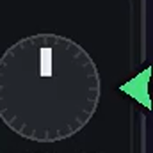
#053 · Edit 1
Top-right dial · turn
Both editions · 00:05:13–00:05:18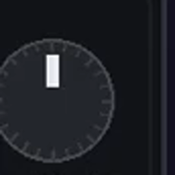
#054 · Edit 1
Top-right dial · press
Both editions · 00:08:16–00:08:19
#055 · Edit 1
Middle-right dial · turn
Both editions · 00:05:22–00:05:25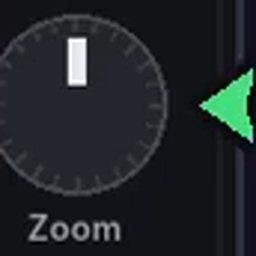
#056 · Edit 1
Middle-right dial · press
Both editions · 00:04:44–00:04:52
#057 · Edit 1
Bottom-right dial · turn
Both editions · 00:05:18–00:05:22
#058 · Edit 1
Bottom-right dial · press
Both editions · 00:05:44–00:06:07#059 · Edit 1
Center wheel · turn
Both editions · 00:04:59–00:05:07
#060 · Edit 1
Center wheel · press
Both editions · 00:05:40–00:05:44
#061 · Edit 2
Touch 1 · top-left
Both editions · 00:08:49–00:09:00#062 · Edit 2
Touch 2 · top row
Both editions · 00:09:00–00:09:15
#063 · Edit 2
Touch 3 · top row
Both editions · 00:09:15–00:09:50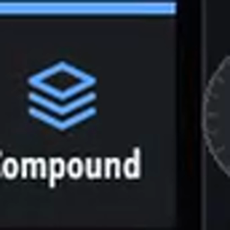
#064 · Edit 2
Touch 4 · top-right
Both editions · 00:09:51–00:10:06
#065 · Edit 2
Touch 5 · middle-left
Both editions · 00:10:06–00:10:16
#066 · Edit 2
Touch 6 · middle row
Both editions · 00:10:16–00:10:28#067 · Edit 2
Touch 7 · middle row
Both editions · 00:10:28–00:10:34#068 · Edit 2
Touch 8 · middle-right
Both editions · 00:10:28–00:10:34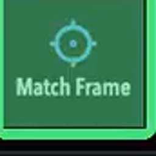
#069 · Edit 2
Touch 9 · bottom-left
Both editions · 00:10:42–00:10:52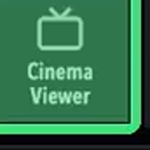
#070 · Edit 2
Touch 10 · bottom row
Both editions · 00:10:52–00:10:59
#071 · Edit 2
Touch 11 · bottom row
Both editions · 00:10:34–00:10:42
#072 · Edit 2
Touch 12 · bottom-right
Both editions · 00:05:31–00:05:40
#073 · Edit 2
Top-left dial · press
Both editions · 00:10:59–00:11:12
#074 · Edit 2
Middle-left dial · press
Both editions · 00:10:59–00:11:12
#075 · Edit 2
Bottom-left dial · press
Both editions · 00:10:59–00:11:12
#076 · Edit 2
Top-right dial · press
Both editions · 00:10:59–00:11:12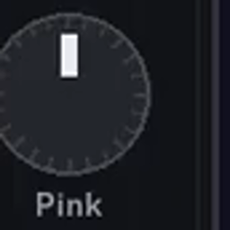
#077 · Edit 2
Middle-right dial · press
Both editions · 00:10:59–00:11:12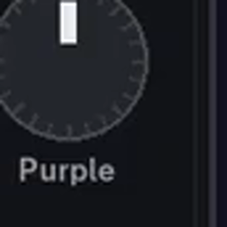
#078 · Edit 2
Bottom-right dial · press
Both editions · 00:10:59–00:11:12
#079 · Edit 3
Touch 1 · top-left
Both editions · 00:11:52–00:11:59
#080 · Edit 3
Touch 2 · top row
Both editions · 00:11:59–00:12:15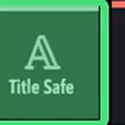
#081 · Edit 3
Touch 3 · top row
Both editions · 00:12:27–00:12:36
#082 · Edit 3
Touch 4 · top-right
Both editions · 00:11:20–00:11:43
#083 · Edit 3
Touch 5 · middle-left
Both editions · 00:12:36–00:12:42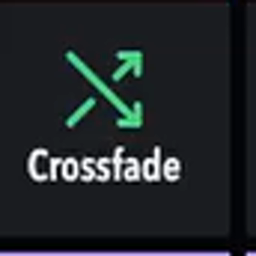
#084 · Edit 3
Touch 6 · middle row
Both editions · 00:12:15–00:12:27
#085 · Edit 3
Touch 7 · middle row
Both editions · 00:11:43–00:11:52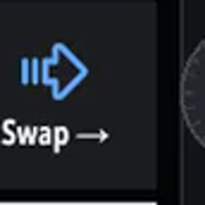
#086 · Edit 3
Touch 8 · middle-right
Both editions · 00:11:43–00:11:52
#087 · Edit 3
Touch 9 · bottom-left
Both editions · 00:12:41–00:12:46
#088 · Edit 3
Touch 10 · bottom row
Both editions · 00:04:18–00:04:37; 00:12:46–00:12:50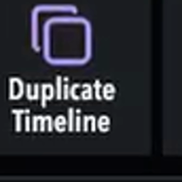
#089 · Edit 3
Touch 11 · bottom row
Both editions · 00:13:04–00:13:17
#090 · Edit 3
Touch 12 · bottom-right
Both editions · 00:05:31–00:05:40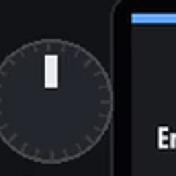
#091 · Edit 3
Top-left dial · press
Both editions · 00:12:50–00:13:04
#092 · Edit 3
Middle-left dial · press
Both editions · 00:12:50–00:13:04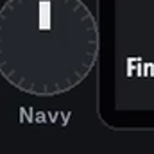
#093 · Edit 3
Bottom-left dial · press
Both editions · 00:12:50–00:13:04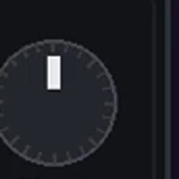
#094 · Edit 3
Top-right dial · press
Both editions · 00:12:50–00:13:04
#095 · Edit 3
Middle-right dial · press
Both editions · 00:12:50–00:13:04
#096 · Edit 3
Bottom-right dial · press
Both editions · 00:12:50–00:13:04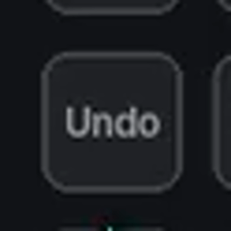
#097 · Physical keys & Fn layer
Undo
Both editions · 00:13:50–00:13:54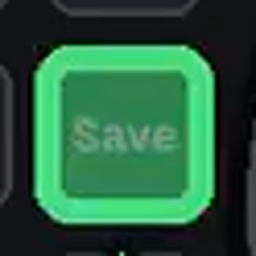
#098 · Physical keys & Fn layer
Save
Both editions · 00:13:54–00:14:00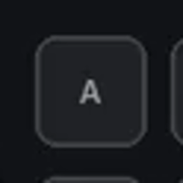
#099 · Physical keys & Fn layer
Square A
Both editions · 00:14:00–00:14:06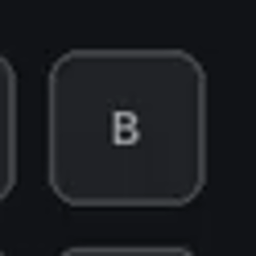
#100 · Physical keys & Fn layer
Square B
Both editions · 00:14:00–00:14:06#101 · Physical keys & Fn layer
Square C
Both editions · 00:05:25–00:05:31
#102 · Physical keys & Fn layer
Square D
Both editions · 00:05:25–00:05:31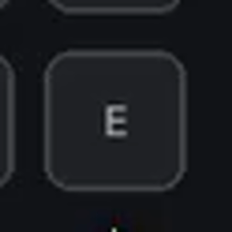
#103 · Physical keys & Fn layer
Square E
Both editions · 00:14:06–00:14:10
#104 · Physical keys & Fn layer
Fn + B
Both editions · 00:13:41–00:13:50
#105 · Physical keys & Fn layer
Fn + round 1
Both editions · 00:14:15–00:14:23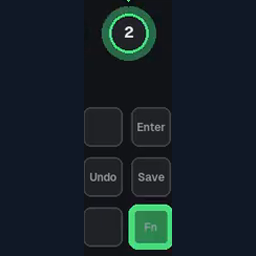
#106 · Physical keys & Fn layer
Fn + round 2
Both editions · 00:14:23–00:14:28
#107 · Physical keys & Fn layer
Fn + round 3
Both editions · 00:14:28–00:14:32
#108 · Physical keys & Fn layer
Fn + round 4
Both editions · 00:14:32–00:14:34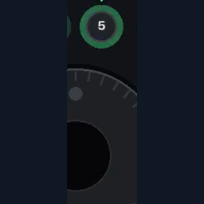
#109 · Physical keys & Fn layer
Fn + round 5
Both editions · 00:14:34–00:14:38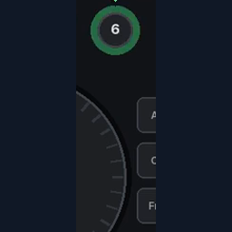
#110 · Physical keys & Fn layer
Fn + round 6
Both editions · 00:14:38–00:14:42
#111 · Physical keys & Fn layer
Fn + round 7
Both editions · 00:14:42–00:14:47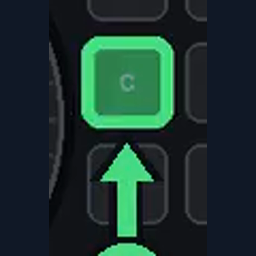
#112 · Physical keys & Fn layer
Fn + C
Both editions · 00:14:48–00:14:56
#113 · Physical keys & Fn layer
Fn + A
Both editions · 00:14:51–00:15:08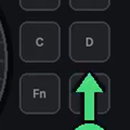
#114 · Physical keys & Fn layer
Fn + D
Both editions · 00:17:47–00:17:55
#115 · Color
Touch 1 · top-left
Both editions · 00:15:40–00:15:48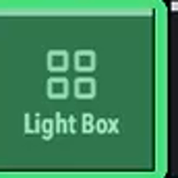
#116 · Color
Touch 2 · top row
Both editions · 00:17:38–00:17:43
#117 · Color
Touch 3 · top row
Both editions · 00:17:43–00:17:47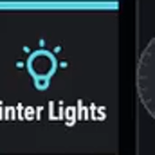
#118 · Color
Touch 4 · top-right
Both editions · 00:16:45–00:17:01
#119 · Color
Touch 5 · middle-left
Both editions · 00:15:52–00:15:57
#120 · Color
Touch 6 · middle row
Both editions · 00:16:35–00:16:40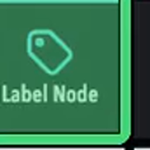
#121 · Color
Touch 7 · middle row
Both editions · 00:16:40–00:16:45
#122 · Color
Touch 8 · middle-right
Both editions · 00:17:01–00:17:07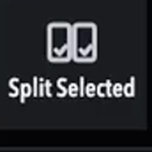
#123 · Color
Touch 9 · bottom-left
Both editions · 00:17:22–00:17:28#124 · Color
Touch 10 · bottom row
Both editions · 00:17:28–00:17:33#125 · Color
Touch 11 · bottom row
Both editions · 00:17:12–00:17:18
#126 · Color
Touch 12 · bottom-right
Both editions · 00:17:18–00:17:22
#127 · Color
Top-left dial · turn
Studio only · 00:16:02–00:16:26
#128 · Color
Top-left dial · press
Studio only · 00:16:30–00:16:35#129 · Color
Middle-left dial · turn
Studio only · 00:16:30–00:16:35
#130 · Color
Middle-left dial · press
Studio only · 00:16:30–00:16:35
#131 · Color
Bottom-left dial · turn
Studio only · 00:16:26–00:16:30#132 · Color
Bottom-left dial · press
Studio only · 00:16:30–00:16:35
#133 · Color
Top-right dial · turn
Both editions · 00:16:45–00:17:01#134 · Color
Middle-right dial · turn
Both editions · 00:16:45–00:17:01#135 · Color
Bottom-right dial · turn
Both editions · 00:16:45–00:17:01#136 · Color
Top-right dial · press
Both editions · 00:17:33–00:17:38
#137 · Fairlight
Touch 1 · middle-left
Both editions · 00:18:08–00:18:19
#138 · Fairlight
Touch 2 · middle row
Both editions · 00:18:19–00:18:29#139 · Fairlight
Touch 3 · bottom-left
Both editions · 00:18:39–00:18:48
#140 · Fairlight
Touch 4 · bottom row
Both editions · 00:18:39–00:18:48
#141 · Fairlight
Touch 5 · bottom row
Both editions · 00:18:39–00:18:48
#142 · Fairlight
Touch 6 · bottom-right
Both editions · 00:18:39–00:18:48
#143 · Fairlight
Top-left dial · turn
Both editions · 00:18:48–00:18:57#144 · Fairlight
Middle-left dial · turn
Both editions · 00:18:29–00:18:34
#145 · Fairlight
Bottom-left dial · turn
Both editions · 00:18:34–00:18:39
#146 · Fairlight
Bottom-left dial · press
Both editions · 00:18:34–00:18:39#147 · Fairlight
Top-right dial · turn
Both editions · 00:18:48–00:18:57#148 · Fairlight
Middle-right dial · turn
Both editions · 00:18:48–00:18:57#149 · Fairlight
Bottom-right dial · turn
Both editions · 00:18:48–00:18:57
#150 · Deliver / Render Queue
Touch 1 · top-left
Studio only · 00:19:06–00:19:13
#151 · Deliver / Render Queue
Touch 2 · top row
Studio only · 00:19:10–00:19:16
#152 · Deliver / Render Queue
Touch 3 · top row
Studio only · 00:19:10–00:19:16
#153 · Deliver / Render Queue
Touch 4 · top-right
Studio only · 00:19:10–00:19:16#154 · Deliver / Render Queue
Touch 5 · middle-left
Studio only · 00:19:16–00:19:23#155 · Deliver / Render Queue
Touch 6 · middle row
Studio only · 00:19:23–00:19:54
#156 · Deliver / Render Queue
Touch 7 · middle row
Studio only · 00:19:23–00:19:54
#157 · Deliver / Render Queue
Touch 8 · middle-right
Studio only · 00:19:23–00:19:54
#158 · Deliver / Render Queue
Touch 9 · bottom-left
Studio only · 00:19:54–00:19:59#159 · Deliver / Render Queue
Touch 10 · bottom row
Studio only · 00:19:59–00:20:03
#160 · Deliver / Render Queue
Touch 11 · bottom row
Studio only · 00:20:03–00:20:09#161 · Deliver / Render Queue
Touch 12 · bottom-right
Studio only · 00:20:09–00:20:13#162 · Deliver / Render Queue
Swipe-right touch 1
Studio only · 00:20:13–00:20:21#163 · Deliver / Render Queue
Swipe-right touch 2
Studio only · 00:20:21–00:20:25
#164 · Deliver / Render Queue
Swipe-right touch 3
Studio only · 00:20:25–00:20:27
#165 · Deliver / Render Queue
Top-left dial · press
Both editions · 00:20:27–00:20:35#166 · Deliver / Render Queue
Top-right dial · press
Both editions · 00:20:27–00:20:35
#167 · Deliver / Render Queue
Free edition Deliver
Free edition · 00:20:35–00:20:43
#168 · Quick Export
Round button 8
Both editions · 00:20:47–00:20:59